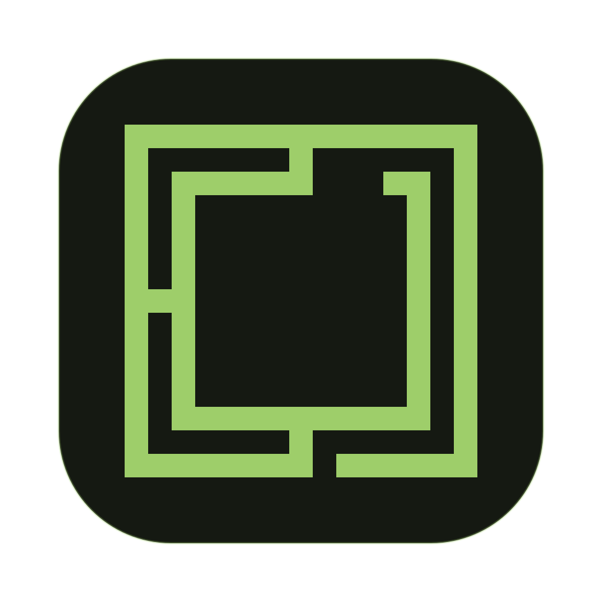

Try Omarchy for Linux
Try the Omarchy desktop in a window. Your current Linux installation stays in place.
For 64-bit x86 PCs with KVM.
Screenshots, downloads and the getting-started guide on GitHub
Before you install
- A 64-bit x86 PC with virtualization turned on in its firmware settings.
- Flatpak with support in your software manager. See the Ubuntu instructions below or set up Flatpak for your distribution.
- About 15 GB free. Omarchy takes about 13 GB, downloaded once (about 2 GB) on first launch, and Software adds the GNOME runtime if you do not have it.
On Ubuntu, complete the setup below before opening this file.
Using Ubuntu? Start here
Ubuntu's App Center does not install Flatpaks. Install Software and its Flatpak support:
sudo apt update
sudo apt install flatpak gnome-software gnome-software-plugin-flatpakLog out and back in so the app appears in your application menu. Then return to this page.
Install and start trying
- Download the install file above. Open it with Software or your distribution's Flatpak installer, then choose Install. The GNOME runtime is installed too if needed.
- Open Try Omarchy from your application menu. On Ubuntu 24.04, Software’s Open button can fail with
ldconfig failed, exit status 256; use the application menu if this happens. - Choose Set up Omarchy, then your own username and password or Quick start. Setup downloads about 2 GB and prepares your VM.
Setup may take several minutes. You can cancel and continue later. On GNOME, clipboard sharing is optional; you can choose Not now and still try Omarchy.
The install file will not open, or prefer a terminal?
After setting up Flatpak, run:
flatpak install --user https://tryomarchy.com/linux.flatpakrefThen open Try Omarchy from your application menu, or run:
flatpak run com.tryomarchy.TryOmarchyYour first session
Ctrl+Alt+G gives your keyboard back to your Linux desktop. Click the Omarchy window to send keys to it again. Ctrl+Alt+F switches fullscreen. Inside Omarchy, Super+Space opens its menu.
The trial account is omarchy, with password omarchy. Your files stay in the VM when you shut it down. Closing its window asks before shutting down.
Updates
Software updates Try Omarchy like any other app, or run flatpak update. Your VM and settings stay.
Removing it
Uninstall in Software. To keep your VM for later, keep the app's data when Software asks. A VM in a folder you chose stays either way, and backups are never touched.
Already using preview 1? It never updates itself, and your menu keeps opening it while it is installed. Close it, run flatpak uninstall --user com.tryomarchy.TryOmarchy//master and keep its data, then install from this page. Your VM stays. Details